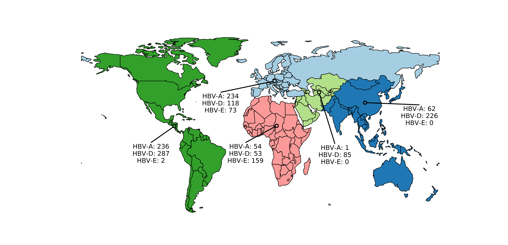

Human migration patterns shape hepatitis B diversity
Barney Isaksen Potter
KU Leuven
2022-12-21
Life Sciences Center, Vilnius University


What can phylogenetics tell us?
- Phylogeny
- Evolutionary rate
- Substitution rates
- Demographic parameters
- Migration rates
- Migration history

What can phylogenetics tell us?
- Phylogeny
- Evolutionary rate
- Substitution rates
- Demographic parameters
- Migration rates
- Migration history
What can phylogenetics tell us?
- Phylogeny
- Evolutionary rate
- Substitution rates
- Demographic parameters
- Migration rates
- Migration history
\[\tiny
Q_{JC69} =
\begin{bmatrix}
\cdot & \lambda & \lambda & \lambda \\
\lambda & \cdot & \lambda & \lambda \\
\lambda & \lambda & \cdot & \lambda \\
\lambda & \lambda & \lambda & \cdot \\
\end{bmatrix} \\[1em]
Q_{GTR} =
\begin{bmatrix}
\cdot & a\pi_C & b\pi_A & c\pi_G \\
a\pi_T & \cdot & d\pi_A & e\pi_G \\
b\pi_T & d\pi_C & \cdot & f\pi_G \\
c\pi_T & e\pi_C & f\pi_A & \cdot \\
\end{bmatrix}
\]
What can phylogenetics tell us?
- Phylogeny
- Evolutionary rate
- Substitution rates
- Demographic parameters
- Migration rates
- Migration history
What can phylogenetics tell us?
- Phylogeny
- Evolutionary rate
- Substitution rates
- Demographic parameters
- Migration rates
- Migration history

What can phylogenetics tell us?
- Phylogeny
- Evolutionary rate
- Substitution rates
- Demographic parameters
- Migration rates
- Migration history
How can we infer phylogenies robustly from genomic sequence data and geographic metadata?
Problem: parameter space size
\[\tiny \begin{array}{cc} Num.~taxa & Num.~topologies \\ \hline 1 & 1 \\ 2 & 1 \\ 3 & 3 \\ 4 & 15 \\ 5 & 105 \\ 6 & 945 \\ 7 & 10,395 \\ 8 & 135,135 \\ 9 & 2,027,025 \\ \vdots & \vdots \\ 769 & 3.753 \times 10^{2,110} \end{array} \]
Source: Stamatakis & Kozlov (2020)


Source: CDC/ Dr. Erskine Palmer
What is HBV?
- Causative agent of heptatitis B
- Chrrhosis
- Hepatocellular carcinoma
- Spread through blood and bodily fluids
- Affects $\geq 350,000,000$ people annually
- Partialy dsDNA genome
- Long strand: 3 kb
- Short strand: 2.2 kb


Source: Morens & Fauci (2020)
Source: Kocher et al. (2021), Science.
- Identify subgenotypes for novel sequences (A/D);
- Date the most recent common ancestor of each genotype;
- Characterize number and timing of major viral migrations.
Sampling bias complicates phyogeographic inference

Source: Mülemann et al. (2018)
Clock rate prior: $1.18 \times 10^{-5}$ [95% HPD: $8.04 \times 10^{-6} \textrm{--} 1.51 \times 10^{-5}$] subs./site/year
Source: Mülemann et al. (2018), Ross et al. (2018)
HBV-A
ML sequence placement

Bayesian phylogeography

Markov jump analysis
HBV-D
HBV-D new sequences

HBV-D evolutionary history

Markov jump analysis


HBV-E
HBV-E new sequences

HBV-E evolutionary history
Markov jump analysis


KU/UZ Leuven
- Guy Baele
- Piet Maes
- Simon Dellicour
- Lize Cuypers
- Emmanuel André
- Samuel Hong
- Nena Bollen
GIGA Research Institute
- Keith Durkin
Fred Hutch
- Trevor Bedford
- John Huddleston
- Tom Sibley
University of Basel
- Richard Neher
University of Bern
- Emma Hodcroft